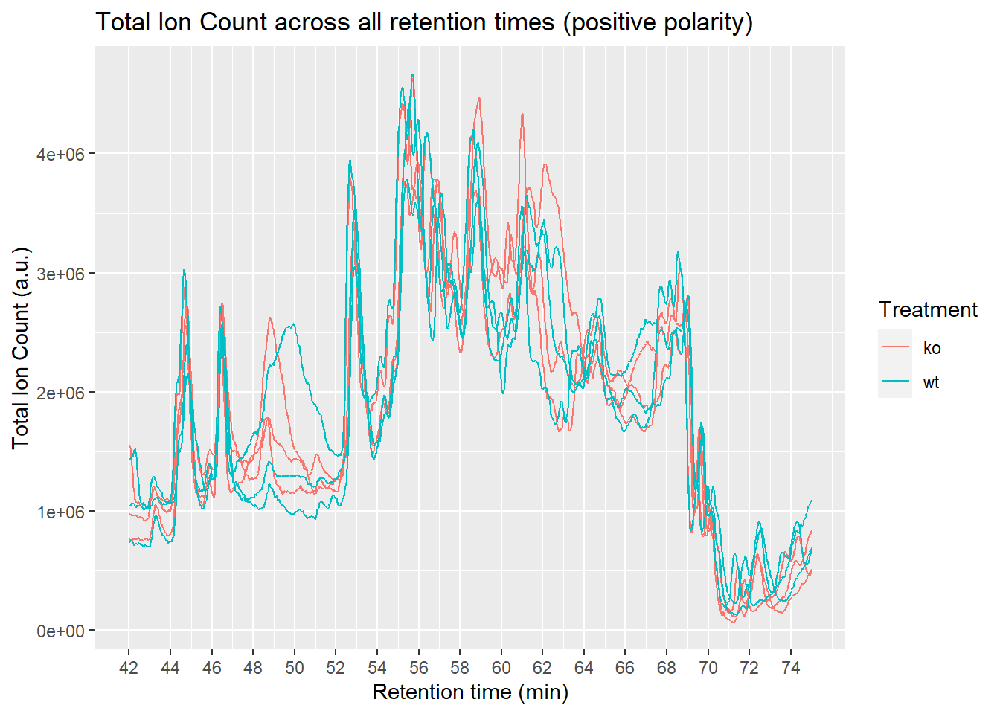
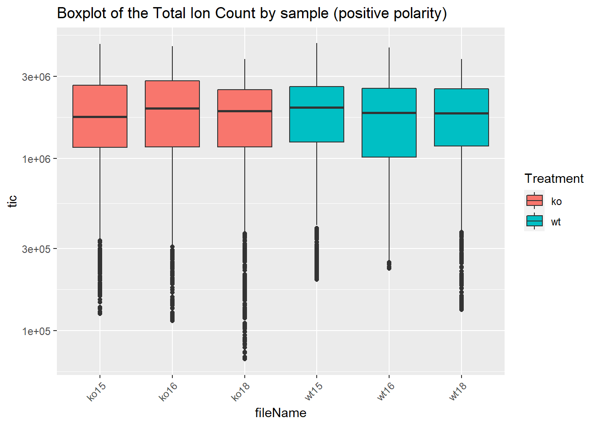

Introduction to NIHSlcms
Institute for Bioengineering of Catalonia
2020-10-20
introduction-to-nihslcms.RmdThe NIHSlcms package was written with two purposes in mind:
- to help data analysts and LC-MS scientists to work with LC-MS samples.
- to help IT pipeline builders implement automated methods for preprocessing.
Functions from this package written for data analysts and LC-MS scientists are prefixed with lcms_, while higher level functions written for IT pipeline builders are prefixed with pipe_. The main reason why all exported functions have a prefix is to make it easy for the user to discover the functions from the package. By typing lcms_ RStudio will return the list of exported functions. In the R terminal, lcms_ followed by the tab key (⇥) twice will have the same effect. Other popular packages, follow similar approaches (e.g: forcats: fct_*, stringr: str_*).
This vignette is written for the first group. It assumes some prior basic knowledge of LC-MS and data analysis, as well as some basic R programming. In case you are interested in building pipelines with this package, you may want to open the file saved in this directory (run it on your computer):
pipeline_example <- system.file("pipeline-rmd", "pipeline_example.R", package = "NIHSlcms")
print(pipeline_example)NODE 1: Data wrangling
Convert RAW to mzXML
First, we need the listed spectra in “.mzXML” format to create the lcms_dataset. We can manually convert “.raw” into “.mzXML” using RawConverter or ProteoWizard externally and saved them within the same input directory. We set the polarity manually.
Input
library(faahKO)
#> Loading required package: xcms
#> Loading required package: Biobase
#> Loading required package: BiocGenerics
#> Loading required package: parallel
#>
#> Attaching package: 'BiocGenerics'
#> The following objects are masked from 'package:parallel':
#>
#> clusterApply, clusterApplyLB, clusterCall, clusterEvalQ,
#> clusterExport, clusterMap, parApply, parCapply, parLapply,
#> parLapplyLB, parRapply, parSapply, parSapplyLB
#> The following objects are masked from 'package:stats':
#>
#> IQR, mad, sd, var, xtabs
#> The following objects are masked from 'package:base':
#>
#> anyDuplicated, append, as.data.frame, basename, cbind, colnames,
#> dirname, do.call, duplicated, eval, evalq, Filter, Find, get, grep,
#> grepl, intersect, is.unsorted, lapply, Map, mapply, match, mget,
#> order, paste, pmax, pmax.int, pmin, pmin.int, Position, rank,
#> rbind, Reduce, rownames, sapply, setdiff, sort, table, tapply,
#> union, unique, unsplit, which, which.max, which.min
#> Welcome to Bioconductor
#>
#> Vignettes contain introductory material; view with
#> 'browseVignettes()'. To cite Bioconductor, see
#> 'citation("Biobase")', and for packages 'citation("pkgname")'.
#> Loading required package: BiocParallel
#> Loading required package: MSnbase
#> Loading required package: mzR
#> Loading required package: Rcpp
#> Warning in fun(libname, pkgname): mzR has been built against a different Rcpp version (1.0.2)
#> than is installed on your system (1.0.5). This might lead to errors
#> when loading mzR. If you encounter such issues, please send a report,
#> including the output of sessionInfo() to the Bioc support forum at
#> https://support.bioconductor.org/. For details see also
#> https://github.com/sneumann/mzR/wiki/mzR-Rcpp-compiler-linker-issue.
#> Warning: multiple methods tables found for 'analyzer'
#> Warning: multiple methods tables found for 'tolerance'
#> Loading required package: S4Vectors
#> Loading required package: stats4
#>
#> Attaching package: 'S4Vectors'
#> The following object is masked from 'package:base':
#>
#> expand.grid
#> Loading required package: ProtGenerics
#>
#> Attaching package: 'ProtGenerics'
#> The following objects are masked from 'package:mzR':
#>
#> analyzer, tolerance
#> The following object is masked from 'package:stats':
#>
#> smooth
#> Warning: replacing previous import 'ProtGenerics::tolerance' by 'mzR::tolerance'
#> when loading 'MSnbase'
#> Warning: replacing previous import 'ProtGenerics::analyzer' by 'mzR::analyzer'
#> when loading 'MSnbase'
#> Warning: multiple methods tables found for 'msInfo'
#> Warning: multiple methods tables found for 'expemail'
#> Warning: multiple methods tables found for 'exptitle'
#> Warning: multiple methods tables found for 'ionSource'
#> Warning: multiple methods tables found for 'ionSourceDetails'
#> Warning: multiple methods tables found for 'analyser'
#> Warning: multiple methods tables found for 'analyzer'
#> Warning: multiple methods tables found for 'analyserDetails'
#> Warning: multiple methods tables found for 'analyzerDetails'
#> Warning: multiple methods tables found for 'detectorType'
#> Warning: multiple methods tables found for 'instrumentModel'
#> Warning: multiple methods tables found for 'instrumentManufacturer'
#> Warning: multiple methods tables found for 'instrumentCustomisations'
#> Warning: multiple methods tables found for 'processingData'
#> Warning: multiple methods tables found for 'smooth'
#> Warning: multiple methods tables found for 'ionCount'
#> Warning: multiple methods tables found for 'centroided'
#> Warning: multiple methods tables found for 'centroided<-'
#> Warning: multiple methods tables found for 'smoothed'
#> Warning: multiple methods tables found for 'smoothed<-'
#> Warning: multiple methods tables found for 'precursorMz'
#> Warning: multiple methods tables found for 'precursorIntensity'
#> Warning: multiple methods tables found for 'precursorCharge'
#> Warning: multiple methods tables found for 'precScanNum'
#> Warning: multiple methods tables found for 'acquisitionNum'
#> Warning: multiple methods tables found for 'scanIndex'
#> Warning: multiple methods tables found for 'msLevel'
#> Warning: multiple methods tables found for 'collisionEnergy'
#> Warning: multiple methods tables found for 'polarity'
#> Warning: multiple methods tables found for 'filterMsLevel'
#> Warning: multiple methods tables found for 'filterMz'
#> Warning: multiple methods tables found for 'filterPolarity'
#> Warning: multiple methods tables found for 'filterRt'
#> Warning: multiple methods tables found for 'filterAcquisitionNum'
#> Warning: multiple methods tables found for 'filterEmptySpectra'
#> Warning: multiple methods tables found for 'filterPrecursorScan'
#> Warning: multiple methods tables found for 'productMz'
#> Warning: multiple methods tables found for 'isolationWindowLowerMz'
#> Warning: multiple methods tables found for 'isolationWindowUpperMz'
#> Warning: multiple methods tables found for 'filterPrecursorMz'
#> Warning: multiple methods tables found for 'filterIsolationWindow'
#>
#> This is MSnbase version 2.10.1
#> Visit https://lgatto.github.io/MSnbase/ to get started.
#>
#> Attaching package: 'MSnbase'
#> The following objects are masked from 'package:ProtGenerics':
#>
#> acquisitionNum, analyser, analyserDetails, analyzerDetails,
#> centroided, centroided<-, collisionEnergy, detectorType, expemail,
#> exptitle, filterAcquisitionNum, filterEmptySpectra,
#> filterIsolationWindow, filterMsLevel, filterMz, filterPolarity,
#> filterPrecursorMz, filterPrecursorScan, filterRt,
#> instrumentCustomisations, instrumentManufacturer, instrumentModel,
#> ionCount, ionSource, ionSourceDetails, isolationWindowLowerMz,
#> isolationWindowUpperMz, msInfo, msLevel, polarity, precScanNum,
#> precursorCharge, precursorIntensity, precursorMz, processingData,
#> productMz, scanIndex, smooth, smoothed, smoothed<-
#> The following object is masked from 'package:stats':
#>
#> smooth
#> The following object is masked from 'package:base':
#>
#> trimws
#>
#> This is xcms version 3.6.2
#>
#> Attaching package: 'xcms'
#> The following objects are masked from 'package:ProtGenerics':
#>
#> peaks<-, polarity<-
#> The following object is masked from 'package:stats':
#>
#> sigma
path <- dir(system.file("cdf", package = "faahKO"), full.names = TRUE,
recursive = TRUE)[c(1:3, 7:9)]
polarity <- 1 # 1 for positive mode, 0 for negative modeCode to run
# Be careful setting the mode to "onDisk" when you apply this function.
dataset <- readMSData(path, mode = "onDisk")
#> Polarity can not be extracted from netCDF files, please set manually the polarity with the 'polarity' method.
dataset@featureData@data[["polarity"]] <- rep(polarity, length(dataset@featureData@data[["polarity"]]))
message("Is the polarity correctly loaded? \n")
#> Is the polarity correctly loaded?
cat("\n")
print(dataset)
#> MSn experiment data ("OnDiskMSnExp")
#> Object size in memory: 2.24 Mb
#> - - - Spectra data - - -
#> MS level(s): 1
#> Number of spectra: 7668
#> MSn retention times: 41:41 - 74:60 minutes
#> - - - Processing information - - -
#> Data loaded [Tue Oct 20 20:36:50 2020]
#> MSnbase version: 2.10.1
#> - - - Meta data - - -
#> phenoData
#> rowNames: ko15.CDF ko16.CDF ... wt18.CDF (6 total)
#> varLabels: sampleNames
#> varMetadata: labelDescription
#> Loaded from:
#> [1] ko15.CDF... [6] wt18.CDF
#> Use 'fileNames(.)' to see all files.
#> protocolData: none
#> featureData
#> featureNames: F1.S0001 F1.S0002 ... F6.S1278 (7668 total)
#> fvarLabels: fileIdx spIdx ... spectrum (31 total)
#> fvarMetadata: labelDescription
#> experimentData: use 'experimentData(object)'NODE 2: Append metadata
To merge the metadata, an Excel o CSV file is required, containing the first column (called “sampleNames”) with the same name of the LC-MS files, ending with the format (e.g. Sample1.mzXML).
It requires a column (called “treatment”) with the class sample. Ensure you have this specific colname “treatment”.
Caution with metadata. The use of characters such as “-”, “/”, " " (space) and starting with numbers, etc. leads to problems. Therefore, the function replace [\\\"\\s/\\\\,;.:|#@$%&?!*%+-=><^'(){}\\[\\]]+ by _. Beware of using other special characters and change them by usual ASCII characters.
NODE 3: Total ion chromatogram
tics <- lcms_tics(dataset, treatment = "treatment")
lcms_plot_tics(tics,
treatment = treatment,
plot_type = "spec")
#> Warning: Removed 72 row(s) containing missing values (geom_path).

NODE 4: Filtering
Filter by retention time / m/z
For coherence with the pipeline, time is measured in minutes. XCMS and IPO packages work in seconds by default, while CAMERA and MAIT in minutes. Under the hood, the still do in this way, but we preset all our results in minutes.
NODE 5: Data Preprocessing - XCMS
It includes:
- Peak Detection
- Retention Time Correction
- Peak Correspondence
- Imputation
Parameters can be changed here. After manual inspection of certain compounds that we know that they should naturally appear, such as plotting leucine and isoleucine (as we are using plasma samples), we can set parameters more accurally.
Code to run
# retention_time_max <- (retention_time*60)+120
# retention_time_min <- (retention_time*60)-120
# rtr <- c(retention_time_min, retention_time_max)
mz_max <- mz + 0.01
mz_min <- mz - 0.01
mzr <- c(mz_min, mz_max)
## extract the chromatogram
chr_raw <- chromatogram(dataset,
# rt = rtr,
mz = mzr)
plot(chr_raw, col = "blue", main = metabolite)
#> Warning in .local(x, ...): All chromatograms empty
NODE 5: Optimization of parameters
Code to run
default_peakpeaking_params <- lcms_default_peakpicking_params(noise = c(5e+05, 1e+06),
snthresh = 3,
min_peakwidth = c(5, 20),
max_peakwidth = c(35, 60),
optimize = optimize)
#
# default_peakpeaking_params$prefilter <- 3
# default_peakpeaking_params$value_of_prefilter <- 1000
# default_peakpeaking_params$integrate <- 1
#
# resultPeakpicking <- lcms_peakpicking_optimization(
# dataset = dataset,
# peakpickingParameters = default_peakpeaking_params,
# nSlaves = nSlaves,
# opt_path = opt_path,
# subdir = NULL,
# plots = FALSE)